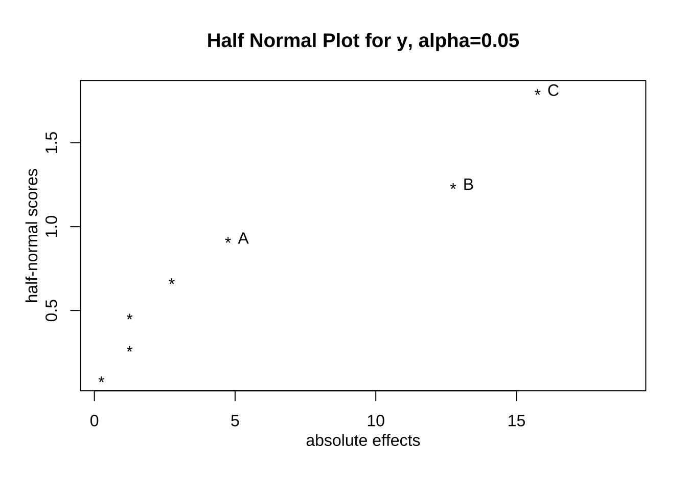

제 1 장 반복이 없는 \(2^3\) 요인배치법
먼저 반복이 없는 \(2^3\) 요인배치법이 적용되는 교과서 예제 7.3 에 대하여 논의합니다.
1.1 처리조합 자료의 생성
먼저 R 프로그림을 이용하여 분석을 하기 위해서는 실험 자료를 data.frame 형식으로 만들어야 한다.
먼저 각 요인의 수준을 조합하여 처리의 조합을 만들어 보자. 처리의 조합을 만드는 일은 일일이 손으로
처리 조합을 만들 수 있지만 패키지 FrF2 에 있는 함수 FrF2()를 사용하면 처리 조합에 대한 데이터프레임을 쉽게 만들 수 있다.
이제 \(2^3\) 요인배치법의 처리 조합은 다음과 같이 만들 수 있다.
X <- FrF2(nruns=8, nfactors=3, randomize = FALSE)## creating full factorial with 8 runs ...X## A B C
## 1 -1 -1 -1
## 2 1 -1 -1
## 3 -1 1 -1
## 4 1 1 -1
## 5 -1 -1 1
## 6 1 -1 1
## 7 -1 1 1
## 8 1 1 1
## class=design, type= full factorial위에서 함수 FrF2()는 다음과 같은 인자를 가진다. nruns 는 처리 조합의 개수이고 nfactors는 요인의 개수이다. randomize=TRUE 는 처리조합의 순서를 임의로 바꾸는 명령이다.
FrF2(nruns, nfactors, randomize=TRUE)우리는 지금 3개의 요인을 가진 2요인 배치법을 고려하므로 위와 같이 nruns=8, nfactors=3 으로 지정해야 한다. 또한 실험을 직접 실행하는 것이 아니므로 실험의 순서는 임의화 하지 않는다 (randomize = FALSE).
유의할 점은 요인의 이름은 다른 지정을 하지 않으면 알파벳 대문자 순서로 지정해 준다.
이제 반응값을 위에서 생성한 처리의 조합순서대로 생성하고 함수 cbind() 를 이용하여 실험자료를 만들어 보자.
y <- c(2,-5,15,13,-12,-17,-2,-7)
df <- cbind(X,y)
df %>% kbl() %>% kable_paper("hover", full_width = F)| A | B | C | y |
|---|---|---|---|
| -1 | -1 | -1 | 2 |
| 1 | -1 | -1 | -5 |
| -1 | 1 | -1 | 15 |
| 1 | 1 | -1 | 13 |
| -1 | -1 | 1 | -12 |
| 1 | -1 | 1 | -17 |
| -1 | 1 | 1 | -2 |
| 1 | 1 | 1 | -7 |
위에서 작성한 3 요인의 2수준 배치법의 자료에서 처리의 순서는 표준형 순서(standard order)로 정렬되어 있다.
표준형 순서는 요인의 순서를 A, B, C 로 고려한다면 제일 먼저 나오는
요인의 수준이 가장 빨리 변하고 다음 요인의 순서가 그 보다 느리게 변하며 가장 마지막의 요인에 대한 수준의 순서가 가장 느리게 변하는 것을 의미한다.
즉 요인 A 의 순서는 -+-+-+-+, 요인 B의 순서는 --++--++ 이며 마지막 요인 C의 순서는
----++++ 이다.
FrF2() 는 randomize = FALSE 로 지정해 주면 처리의 순서를 표준형 순서로 생성한다.
1.2 처리효과의 계산
1.2.1 인수분해법
이제 교과서에서 나오는 방법으로 처리 효과를 계산헤 보자.
요인 A 에 대한 주 효과는 인수분해 방법을 통해서 다음과 같이 계산할 수 있다.
\[ A = \frac{1}{4} (a-1)(b+1)(c+1) = \frac{1}{4} [(a + ac + ab + abs) - ((1)-c-b-bd)] \]
따라서 A 에 대한 주효과는 다음과 같이 계산된다.
\[ A = \frac{1}{4} [(-5+13-17-7)-(2 +15-12-2)] = -4.75 \]
다른 모든 요인들의 주효과와 상호작용 효과는 교과서 181-182에 나오는 인수분해법으로 구할 수 있다.
1.2.2 함수 yates()
패키지 unrepx 에 나오는 함수 yates 를 이용하면 손쉽게 처리 효과를 계산할 수 있다.
yates(df$y, c("A", "B", "C"))## A B AB C AC BC ABC
## -4.75 12.75 1.25 -15.75 -0.25 -2.75 -1.25
## attr(,"mean")
##
## -1.625함수 yates 는 첫번쟤 인자로 표준형 순서로 정렬되어 있는 반응값의 벡터를 넣어주고 두 번째 인자로 요인의 이름으로 구성된 문자 벡터를 넣어준다. 함수 yates 의 결과는 각 요인의 효과를 게산해 주고 마지막으로 전체 평균 \(\bar y\)를 생성한다.
함수 yates()를 이용하면 표준형 순서로서 영문 소문자 표기법으로 표시죈 처리조합을 구할 수 있다.
예를 들어서 \(2^4\) 실험법에 대하여 abcd 표기법으로 표준형 순서로 정렬된 처리 조합을 아래와 같이 구할 수 있다,
물론 가장 처음의 처리 (1) 은 결과에 나타나지 않는다.
yates(rep(0,16))## A B AB C AC BC ABC D AD BD ABD CD ACD BCD ABCD
## 0 0 0 0 0 0 0 0 0 0 0 0 0 0 0
## attr(,"mean")
##
## 01.2.3 R 프로그램을 이용
R 프로그램을 이용하여 Yates 방법으로 처리 효과를 계산해주는 함수를 만들어 보자.
# yates 방법으로 처리 효과를 계산해주는 함수
myyates <- function(y) {
n <- length(y) #자료의 수
k = round(log(n)/log(2)) # 요인의 수
nhalf <- n/2 # (자료의 수)/2
res<- rep(0,n)
for ( i in 1:k ){
for (j in 1:nhalf) {
res[j] <- y[2*j-1] + y[2*j]
}
for (j in 1:nhalf) {
res[j+nhalf] <- -y[2*j-1] + y[2*j]
}
y <-res
}
res/nhalf
}
myyates(df$y) ## [1] -3.25 -4.75 12.75 1.25 -15.75 -0.25 -2.75 -1.25yates 방법에서와 같이 처음나온 수는 전체 평균의 2 배이며 두 번째 수부터 효과의 추정값이다.
1.2.4 회귀식의 이용
이제 회귀식을 적합시키자.
fm1 <- lm (y~ A*B*C, data=df)
summary(fm1)##
## Call:
## lm.default(formula = y ~ A * B * C, data = df)
##
## Residuals:
## ALL 8 residuals are 0: no residual degrees of freedom!
##
## Coefficients:
## Estimate Std. Error t value Pr(>|t|)
## (Intercept) -1.625 NA NA NA
## A1 -2.375 NA NA NA
## B1 6.375 NA NA NA
## C1 -7.875 NA NA NA
## A1:B1 0.625 NA NA NA
## A1:C1 -0.125 NA NA NA
## B1:C1 -1.375 NA NA NA
## A1:B1:C1 -0.625 NA NA NA
##
## Residual standard error: NaN on 0 degrees of freedom
## Multiple R-squared: 1, Adjusted R-squared: NaN
## F-statistic: NaN on 7 and 0 DF, p-value: NA위에서 적합한 모형은 요인의 수준이 모두 범주형인 경우이므로 다음과 같은 3원배치 분산분석 모형을 적합하는 것이다.
\[\begin{equation} y_{ijk} = \mu + \alpha_i + \beta_j + \gamma_k + (\alpha \beta)_{ij} +(\beta \gamma)_{jk} + (\alpha \gamma )_{ik} + (\alpha \beta \gamma_k) + e_{ijk},\quad i=1,2,~j=1,2,~k=1,2 \tag{1.1} \end{equation}\]위의 모형 (1.1) 은 모수의 개수가 \(1+2+2+2+4+4+4+8=27\)이다. 하지만 관측값이 8개이기 때문에 정규방정식의 해가 유일하게 존제하지 않는다. 따라서 최소한 19개의 제약 조건이 필요하다. 고차원 배치법에 대한 회귀모형에서 제약조건을 주는 방법은 과목의 범위를 벋어나므로 생략한다.
위의 추정 결과는 8개의 관측값을 가지고 8개의 모수를 가진 모형을 적합하는 경우이며 이렇게 관측값의 개수와 모수의 개수가 같은 모형을 포화모형(saturated model)이라고 부른다. 포화모형에서는 오차항의 분산을 추정할 수 있는 잔차가 모두 0이기 때문에 \(\sigma^2\)을 추정할 수 없다. 따라서 표준오차도 구할 수 없다.
회귀식의 계수에 대한 추정치에서 절편을 제외한 추정치는 대응하는 효과 추정치의 절반인 것을 알 수 있다. 절편의 주정치는 전체 평균 \(\bar y\)이다.
coef(fm1)[-1]*2## A1 B1 C1 A1:B1 A1:C1 B1:C1 A1:B1:C1
## -4.75 12.75 -15.75 1.25 -0.25 -2.75 -1.25위에서 적합한 회귀식을 선형모형 \(\bm y = \bm X \bm \beta + \bm e\) 로 보면 모형의 계획행렬 \(\bm X\) 는 다음과 같이 나오며 열이 각 효과의 대비인 것을 알 수 있다.
model.matrix(fm1)## (Intercept) A1 B1 C1 A1:B1 A1:C1 B1:C1 A1:B1:C1
## 1 1 -1 -1 -1 1 1 1 -1
## 2 1 1 -1 -1 -1 -1 1 1
## 3 1 -1 1 -1 -1 1 -1 1
## 4 1 1 1 -1 1 -1 -1 -1
## 5 1 -1 -1 1 1 -1 -1 1
## 6 1 1 -1 1 -1 1 -1 -1
## 7 1 -1 1 1 -1 -1 1 -1
## 8 1 1 1 1 1 1 1 1
## attr(,"assign")
## [1] 0 1 2 3 4 5 6 7
## attr(,"contrasts")
## attr(,"contrasts")$A
## [,1]
## -1 -1
## 1 1
##
## attr(,"contrasts")$B
## [,1]
## -1 -1
## 1 1
##
## attr(,"contrasts")$C
## [,1]
## -1 -1
## 1 11.3 분산분석
분산분석푶은 앞에서 적합한 모형 (1.1)을 적합한 후 aov() 또는 anova() 함수를 적용하면 구할 수 있다.
앞에서 언급하였듯이 모형 (1.1)은 포화모형이므로 제곱합은 구할 수 있지만 잔차제곱합을 구할 수 없으므로 가설 검정은 할 수 없다.
anova(fm1)## Warning in anova.lm(fm1): ANOVA F-tests on an essentially perfect fit are
## unreliable## Analysis of Variance Table
##
## Response: y
## Df Sum Sq Mean Sq F value Pr(>F)
## A 1 45 45
## B 1 325 325
## C 1 496 496
## A:B 1 3 3
## A:C 1 0 0
## B:C 1 15 15
## A:B:C 1 3 3
## Residuals 0 0위의 분산분석표에서 효과 \(A \times B\), \(A \times C\), \(A \times B \times C\) 에 대한 제곱합의 크기가 다른 효과에 비하여 상대적으로 매우 작다.
1.4 핵심 요인효과의 선별
핵심요인 효과는 효과 추정치의 절대값 \(| \bar y_1 -\bar y_0|\) 들을 가지고 반정규확률 그림을 그려서 선별할 수 있다.
반정규확률 그림은 패키지 FrF2에 있는 함수 DanielPlot() 를 사용하여 구할 수 있다.
DanielPlot(fm1, half=TRUE)
위의 반정규확률 그림을 보면 주요인 \(B\) 와 \(C\) 가 핵심 요인임을 알 수 있다.
교과서 예제의 결론과 같이 제곱합이 작은 3개의 효과 \(A \times B\), \(A \times C\), \(A \times B \times C\)에 풀링하여 모형을 다시 적합해 보자.
이제 회귀식을 적합시키자.
fm11 <- lm (y~ A+B+C+B*C, data=df)
summary(fm11)##
## Call:
## lm.default(formula = y ~ A + B + C + B * C, data = df)
##
## Residuals:
## 1 2 3 4 5 6 7 8
## 1.125 -1.125 -1.375 1.375 0.125 -0.125 0.125 -0.125
##
## Coefficients:
## Estimate Std. Error t value Pr(>|t|)
## (Intercept) -1.625 0.515 -3.15 0.05115 .
## A1 -2.375 0.515 -4.61 0.01922 *
## B1 6.375 0.515 12.37 0.00114 **
## C1 -7.875 0.515 -15.28 0.00061 ***
## B1:C1 -1.375 0.515 -2.67 0.07583 .
## ---
## Signif. codes: 0 '***' 0.001 '**' 0.01 '*' 0.05 '.' 0.1 ' ' 1
##
## Residual standard error: 1.46 on 3 degrees of freedom
## Multiple R-squared: 0.993, Adjusted R-squared: 0.983
## F-statistic: 104 on 4 and 3 DF, p-value: 0.00151anova(fm11)## Analysis of Variance Table
##
## Response: y
## Df Sum Sq Mean Sq F value Pr(>F)
## A 1 45 45 21.24 0.01922 *
## B 1 325 325 153.00 0.00114 **
## C 1 496 496 233.47 0.00061 ***
## B:C 1 15 15 7.12 0.07583 .
## Residuals 3 6 2
## ---
## Signif. codes: 0 '***' 0.001 '**' 0.01 '*' 0.05 '.' 0.1 ' ' 11.5 부록: 처리 조합을 만드는 다른 방법
참고로 처리 조합의 데이터프레임을 만드는 다른 방법을 알아보자.
함수 expand.grid() 는 인자로 주어진 벡터들의 원소들로 구성된 모든 조합을 만들어 주는 함수이다.
X1 <- expand.grid(A = gl(2, 1, labels = c("-1", "1")),
B = gl(2, 1, labels = c("-1", "1")),
C = gl(2, 1, labels = c("-1", "1")))
X1## A B C
## 1 -1 -1 -1
## 2 1 -1 -1
## 3 -1 1 -1
## 4 1 1 -1
## 5 -1 -1 1
## 6 1 -1 1
## 7 -1 1 1
## 8 1 1 1함수 expand.grid() 의 인자에 대한 설명은 다음과 같다.
gl(n, k, length = n*k, labels = seq_len(n), ordered = FALSE)
- n: an integer giving the number of levels.
- k: an integer giving the number of replications.
- labels: an optional vector of labels for the resulting factor levels.
- ordered: a logical indicating whether the result should be ordered or not.만약 반복이 있다면 데이터프레임을 함수 rbind() 를 이용하여 붙이면 된다.
X2 <- rbind(X1, X1)
X2## A B C
## 1 -1 -1 -1
## 2 1 -1 -1
## 3 -1 1 -1
## 4 1 1 -1
## 5 -1 -1 1
## 6 1 -1 1
## 7 -1 1 1
## 8 1 1 1
## 9 -1 -1 -1
## 10 1 -1 -1
## 11 -1 1 -1
## 12 1 1 -1
## 13 -1 -1 1
## 14 1 -1 1
## 15 -1 1 1
## 16 1 1 1